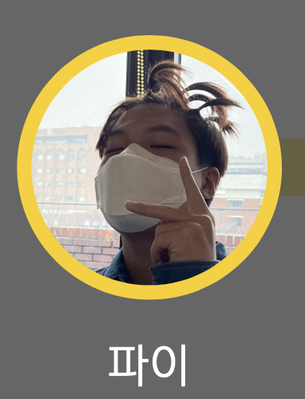

파이 소개서
:Confidence in Intuition and perspective creator

PI's 웹사이트
동기:이 친구들 대해 알아가면서 이 친구들이 도와주어야 하는 불쌍한 사람들이 아니라는 것을 알게 되었습니다. 오히려 누구보다 스스로 나아가려 하는 의지를 가진 사람들이었습니다. 이들에게 필요한 것은 기회이지 도움이 아닙니다. 앞으로 이들에게 다양한 기회가 제공 될 수 있도록 다음 모듈도 이 프로젝트를 진행할 것입니다.